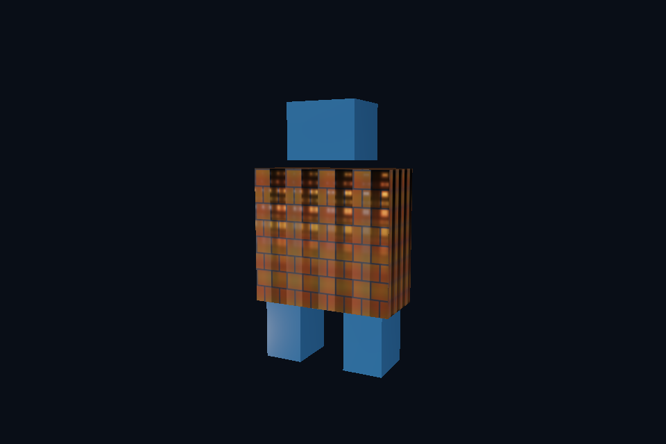

第 15 课：glTF 场景与 PBR 材质
本课独立工程与关键注释
main.cpp · 本地辅助实现 · 本课着色器 · CMakeLists.txt
本目录拥有完整课程源码、资源与依赖配方。关键步骤含中文注释，不链接其他课的课程实现。可将整个目录复制到其他位置，用以下命令单独构建和检查；第三方依赖首次配置需要联网或提供缓存。
cmake -S . -B build -A x64
cmake --build build --config Debug --parallel 4
ctest --test-dir build -C Debug --output-on-failure
课程首页 · 上一课 · 下一课
目标与运行
cmake --preset opengl
cmake --build --preset opengl-debug --target 15_model_gltf --parallel 4
.\OpenGL\build\bin\Debug\15_model_gltf.exe
预期画面：机器人模型由多块网格组成；不同材质、贴图和层级位置正确。
相机：W/A/S/D 移动，Q/E 升降，按住右键转向，Esc 退出。
代码阅读顺序
15_model_gltf/main.cpp → common/model.hpp 的 materials、gather、visit、draw → assets/models/robot.gltf
从本课 main.cpp 进入；公共工具在 common，GLSL 在 shaders。先画出每一遍读什么、写什么，再逐个展开辅助类。
原理与实现
glTF 2.0 为运行时资产传输设计：JSON 描述场景、节点、网格、材质，bufferView/accessor 描述二进制数据。当前 robot.gltf 与 robot.bin 是自制素材；打开 JSON 能看见 Body、Head、LeftFoot、RightFoot。节点对同一 mesh 的引用可以复用资源，节点变换递归累乘，world=parent*local。
Assimp 的 aiMatrix4x4 与 GLM 的构造方式不同，convert 显式转置行列布局。忘记处理矩阵布局通常表现为部件位置、旋转或缩放异常。Model::draw 对每块网格设置 rootTransform*nodeGlobal，而不是对所有部件使用同一个单位矩阵。
材质使用 metallic-roughness 工作流，基础颜色包含 factor×贴图；基础颜色纹理使用 sRGB 格式，让 GPU 自动解码为线性值。金属度/粗糙度贴图保持线性，绿色 G 是 roughness，蓝色 B 是 metallic。材质因子继续与纹理值相乘。法线贴图解码到 [-1,1]，随后归一化。
导入器支持外部图片与 Assimp 提供的压缩/未压缩内嵌图片。本教学渲染层只实现 UV0、基础颜色、法线、金属粗糙度、AO 等核心通路；未完整实现 glTF 的 alphaMode、doubleSided、emissive、纹理变换、扩展材质与全部动画插值。能被 Assimp 解析不代表所有视觉功能都已实现。更完整的兼容范围见导入指南。
glTF 的 UV 原点与图片约定需要作为一套系统处理。这里使用自制 glTF 与不翻转的 stbi 解码，不全局开启 FlipUVs；换来源时先用 UV 测试图诊断，不要同时翻图片和 UV。规范依据见 Khronos glTF 2.0。
修改练习
修改某一节点 translation；修改材质 metallicFactor 与 roughnessFactor，对比 factor=0 和 1。
修改后重新执行 cmake --build --preset opengl-debug --target 15_model_gltf --parallel 4。GLSL、模型、图片会复制到程序旁的 shaders/assets 目录。源文件应修改教程根目录下的版本，运行目录的副本会被下一次构建覆盖。
自测与参考答案
粗糙度贴图能使用 GL_SRGB8 吗？
不能。它是数值数据，sRGB 解码会改变粗糙度含义。
检查与排错
运行 15_model_gltf.exe --smoke 可执行确定时间的四帧渲染检查。重要技术开关还可用 --smoke --variant --capture 与默认抓图对比。共享工具会检查 GL 错误、非背景像素和图像动态范围，但这不能代替人工核对技术含义。参见 进阶排错。
参考截图
以下为课程自带素材、固定时间 1 秒时的实际渲染；你的相机与操作改变后画面会不同。

深入学习：数据、接口与执行
glTF 将节点、网格、材质、图片和 skin 分开组织。图片可能内嵌；金属粗糙度数据与 albedo 颜色使用不同解码约定。先验证静态节点，再加入动画。
配套精讲：三 API 对照 · 模型、节点与骨骼迁移。先读概念与参数选择，再返回本课实现核对，不必一次展开所有公共类。
本课的真实源码切片
来自 OpenGL/lessons/15_model_gltf/main.cpp，第 7—32 行；这是现有实现的局部摘录，末尾可能处于函数中间，不是可单独编译的完整程序。
int main(int argc, char** argv) try {
// 先创建上下文；它必须比 shader、纹理和网格活得更久。
App app(argc, argv, "15_model_gltf - OpenGL Course");
auto modelPath = asset(app, "models/robot.gltf");
for (int k = 1; k + 1 < argc; ++k)
if (std::string(argv[k]) == "--model")
modelPath = std::filesystem::absolute(argv[++k]);
// 模型持有自己的网格/材质；加载完成不代表自动绑定到当前 shader。
Model model(modelPath);
// shader 路径指向本课自己的文件；属性、uniform 与下方 C++ 设置对应。
Shader shader(app, "model.vert", "pbr.frag");
Camera camera;
camera.pos = glm::vec3(3, 1.0f, 6);
camera.pitch = -7;
camera.yaw = -116.565f;
glEnable(GL_DEPTH_TEST);
// 每帧处理输入并绘制；GPU 对象在退出循环后按 C++ 作用域逆序释放。
while (app.begin()) {
camera.update(app);
app.clear();
shader.use();
pbrDefaults(shader);
cameraUniforms(shader, app, camera);
// 空格按下时暂停在 bind pose，便于对照骨骼形变。
model.update(app.key(GLFW_KEY_SPACE) == GLFW_PRESS ? 0.f : app.time());
model.draw(shader);
同主题跨 API 导航
以下是同主题参考；场景、功能完成度和版本基线可能不同，具体边界见对照章节。
先预测，再验证
直接忽略节点层级，只把所有 mesh 放在原点会怎样？
参考推导：各部件的局部坐标失去父子关系，位置/缩放和实例都会错误；文件成功解析不等于场景完整呈现。
在一次实验中只改一个因素，记录预测、实际画面/日志和原因。检查已有 smoke 是否仍通过；图形调试器里再核对本次 draw 的实际输入/输出，不能仅凭进程正常退出下结论。